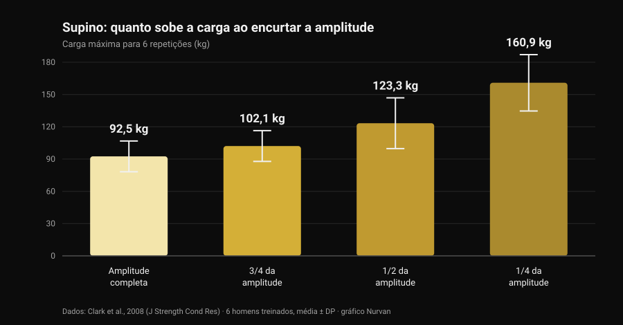
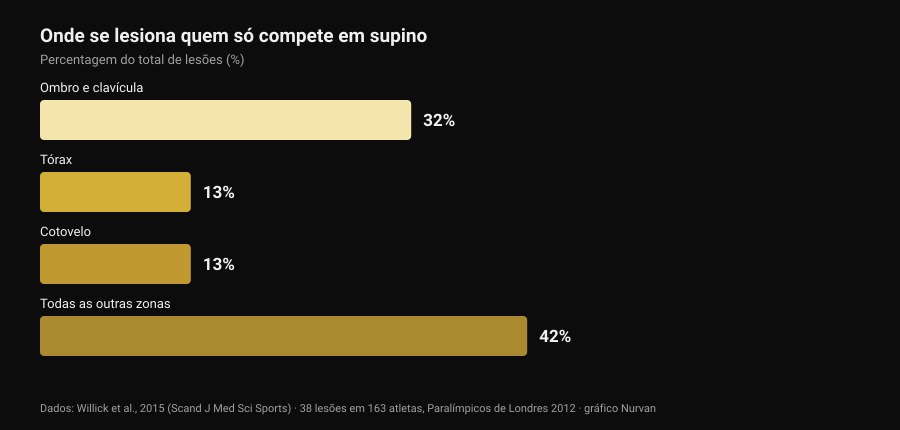

Pegada bulldog no supino: o que dizem os estudos
Um post técnico que passou no meu feed explica a pegada bulldog no supino: antebraço rodado para dentro, barra apoiada na diagonal sobre a palma, promessa de menos tensão no cotovelo e mais estabilidade. É uma descrição honesta, e parte da comunidade usa-a há anos. Depois fui ver quantas vezes essa pegada foi medida na literatura. Zero. Não é motivo para a descartar: é motivo para a contar tal como é e para usar os dados que de facto existem — os da amplitude de movimento e os de onde se lesiona realmente quem faz supino.

Em resumo
- Nenhum estudo indexado a mediu. A pesquisa "bulldog grip" na PubMed devolve zero resultados (verificado a 29 de outubro de 2026): sem eletromiografia, sem comparação de cargas, sem dados de dor ou lesão.
- A regra da IPF não diz o que se repete. O regulamento técnico em vigor desde 1 de março de 2026 exige que "mãos, polegares e dedos agarrem completamente a barra, com o polegar à volta" e proíbe a pegada invertida. A palavra "bulldog" não aparece.
- Encurtar a amplitude aumenta os quilos, não as adaptações. O máximo para 6 repetições passa de 92,5 kg em amplitude completa para 160,9 kg num quarto de amplitude (Clark et al., 2008). Mas em dez semanas de treino a amplitude completa venceu todos os parciais em todas as variantes testadas (Martínez-Cava et al., 2022).
- O cotovelo não é o problema principal do supino. No desporto que é só supino, ombro e clavícula valem 32% das lesões e o cotovelo 13% (Willick et al., 2015).
- O cotovelo pesa mais depois dos 40. Em 245 powerlifters, a taxa de lesão no cotovelo e na mão/punho aumenta de forma significativa depois dos 40 anos (Siewe et al., 2011).
O que é a pegada bulldog, em palavras simples
Na pegada que quase toda a gente usa, a barra fica mais ou menos a meio da palma e o antebraço permanece neutro. Na pegada bulldog rodas o antebraço para dentro — o que em anatomia se chama rotação interna, o movimento que leva o polegar na direção do corpo — e a barra acaba apoiada na diagonal sobre a palma, perto da base do polegar em vez do centro da mão.
Daí decorrem três consequências geométricas, não experimentais:
- o punho fica mais alinhado sobre o antebraço, com menos extensão forçada;
- a barra apoia-se mais perto do lado do mindinho, por isso toca o peito um pouco mais acima;
- o cotovelo tende a abrir um pouco mais, porque a rotação do antebraço o arrasta.
São consequências plausíveis e verificáveis com uma régua. Nenhuma delas é um resultado de laboratório.
O que a investigação não tem — e porque isso importa
Consultei a PubMed a 29 de outubro de 2026: "bulldog grip" não devolve um único trabalho. Sobre o supino existe, em contrapartida, literatura razoável sobre a largura da pegada — revimo-la em pegada no supino: larga, média ou fechada — mas ninguém mediu nunca a rotação do punho: nem a atividade dos flexores do antebraço, nem as cargas levantadas, nem a dor referida no cotovelo.
Por isso a afirmação "a pegada bulldog reduz a ativação dos flexores do punho e alivia o cotovelo" é uma hipótese mecânica razoável que ninguém testou. Quem a usa e se sente melhor não está enganado sobre a sua experiência: está a reportar um dado pessoal, válido para si. O que não se pode fazer é transformá-lo numa recomendação geral e chamar-lhe ciência.
O regulamento da IPF: o que lá está mesmo escrito
É aqui que vive o equívoco mais comum, e vale a pena ler o texto em vez dos resumos. O regulamento técnico da IPF em vigor desde 1 de março de 2026 impõe duas condições à pegada no supino:
- mãos, polegares e dedos devem agarrar completamente a barra, com o polegar à volta dela;
- a pegada invertida é proibida, e a distância entre os indicadores não pode exceder 81 cm.
A comparação reveladora é com o agachamento, onde o mesmo regulamento escreve explicitamente que "não é exigido que os polegares envolvam a barra". No supino essa exceção não existe: o polegar fechado é obrigatório.
O que se conclui? Que o regulamento não nomeia a pegada bulldog, e que uma bulldog feita com o polegar fechado e a mão inteira na barra não viola nenhuma das duas linhas. O que acende a luz vermelha é outra coisa: a pegada sem polegar (a chamada suicide grip), a pegada invertida, os indicadores fora das marcas dos 81 cm e — isto toca em cheio em quem leva a rotação ao extremo — uma mão apoiada na barra só com as pontas dos dedos em vez de a agarrar por completo.
Se competes, a conclusão prática é simples: mostra a tua pegada ao árbitro no aquecimento, não a meio da primeira tentativa. As federações nacionais aplicam o mesmo texto, mas no dia da prova o que conta é quão "completa" o juiz considera a tua pegada.
Menos amplitude, mais quilos: o número que organiza o debate
Há uma parte da discussão bulldog que se pode ancorar em números sólidos: a amplitude de movimento. Se a barra toca o peito mais acima com a mesma largura de pegada, o percurso aumenta; se também mudares a largura, pode encurtar. Nos dois casos estás a mexer numa variável que pesa muito.
Quanto pesa mede-o um trabalho de 2008: seis homens treinados testaram o máximo para 6 repetições no supino em quatro amplitudes diferentes.

Da amplitude completa a um quarto de amplitude a carga quase duplica. O mesmo padrão aparece numa amostra muito maior: em 42 homens treinados o máximo crescia progressivamente ao passar de amplitude completa para dois terços e para um terço (Martínez-Cava et al., 2019).
O problema é o que acontece ao longo do tempo. Num ensaio aleatorizado, 50 homens cumpriram dez semanas de um programa idêntico mudando apenas a amplitude treinada: o grupo de amplitude completa obteve os melhores resultados nas três variantes de supino testadas, e os grupos parciais melhoravam menos quanto mais curto era o percurso (Martínez-Cava et al., 2022). No powerlifting paralímpico, onde o supino é toda a competição, o trabalho em amplitude parcial permite cargas mais altas com menos perda de função no fim da sessão, mas a ativação do grande peitoral — porções clavicular e esternal — é maior em amplitude completa (Mendonça et al., 2021).
Traduzido para quem está a considerar a bulldog: se a experimentares e os quilos subirem de repente, antes de festejar vê onde toca a barra. Se toca mais abaixo porque abriste a pegada, parte desse ganho é geometria. E o contrário também vale, como o post original assinala corretamente: com a mesma largura, um ponto de contacto mais alto alonga o percurso e torna o exercício mais duro, não mais fácil.
O cotovelo: onde se lesiona realmente quem faz supino
O argumento principal a favor da bulldog é o alívio do cotovelo. Vale a pena pôr esse cotovelo em proporção.

O powerlifting paralímpico é, na prática, um desporto só de supino: é a amostra mais limpa que temos para saber onde parte quem empurra. Em 163 atletas registaram-se 38 lesões, 61% por sobrecarga crónica. A zona mais afetada é o ombro com a clavícula (32%); tórax e cotovelo seguem empatados nos 13%.
O quadro nos outros desportos de força é o mesmo: a revisão sistemática de Keogh e Winwood aponta ombro, zona lombar, joelho, cotovelo e punho/mão como as zonas mais frequentes, com cerca de uma lesão por cada 1.000 horas de treino no powerlifting. Entre 245 powerlifters alemães, 43,3% referiam incómodos durante o treino de rotina sem o interromper, e a taxa de lesão no cotovelo e na mão/punho crescia de forma significativa depois dos 40 anos (Siewe et al., 2011).
Duas conclusões práticas. A primeira: se o cotovelo dói, a pegada é uma alavanca pequena ao lado de carga, volume, frequência e progressão — é aí que se olha primeiro. A segunda, mais delicada: a rotação interna levada ao extremo fecha a posição do ombro, e uma revisão de 2024 aponta precisamente o posicionamento vulnerável da articulação durante o levantamento entre os fatores de risco de lesão de ombro nos desportos com pesos (Daher et al., 2024). Trocar um incómodo no cotovelo por um problema de ombro é mau negócio: o ombro é a articulação que mais se lesiona.
O que a investigação diz mesmo
"A pegada bulldog reduz a ativação dos flexores do punho e poupa o cotovelo" Zero estudos indexados, nenhuma eletromiografia. É uma hipótese mecânica, não um resultado.
"Dá um ponto de contacto mais alto e uma abertura de cotovelo mais natural" A geometria sustenta-se: ao rodar o antebraço a barra desloca-se para o lado do mindinho. Quanto muda de facto o ângulo do cotovelo, ninguém mediu.
"Com a mesma largura, um ponto mais alto aumenta a amplitude, logo custa mais" É coerente com a relação entre amplitude e carga: mais percurso, menos quilos na barra.
"Reduzir a amplitude é uma vantagem" Aumenta claramente a carga (de 92,5 para 160,9 kg entre amplitude completa e um quarto), mas em dez semanas de treino a amplitude completa produz mais adaptações em todas as variantes.
"A IPF proíbe-a porque exige polegar fechado" O regulamento de 2026 não nomeia a bulldog: proíbe a pegada invertida e exige que mãos, polegares e dedos agarrem completamente a barra. Uma bulldog com o polegar fechado cumpre ambas.
"Ajuda os principiantes que fecham demasiado os cotovelos" Não há dados sobre principiantes, técnica e pegada. E é o ombro, não o cotovelo, a zona que mais se lesiona a empurrar.
Como aplicar
- Se nada dói e os números sobem, não mudes por moda. A pegada que usas há anos é também a pegada sobre a qual construíste a técnica: mudá-la custa-te parte desse automatismo durante algumas semanas.
- Se a experimentares, mantém o polegar fechado e a mão inteira na barra. É a versão que fica dentro do regulamento e também aquela em que a barra não te pode escapar.
- Mede o ponto de contacto antes e depois. Marca onde a barra toca no peito com a pegada antiga e com a nova: é a única forma de saber se mudaste a pegada ou a amplitude.
- Dá-lhe três a quatro semanas e um critério numérico. Mesma carga, mesmas séries, mesmo ponto de contacto: se com o mesmo RIR (as repetições que te sobram em reserva) a carga não se mexe, a pegada não te está a dar nada.
- Se o cotovelo dói, olha primeiro para o programa. Saltos de carga, demasiadas séries perto da falha e nenhuma semana de descarga explicam muito mais do que a rotação do punho. A lógica de séries, descanso e progressão está em quantas repetições para massa muscular.
- Dor que dura semanas, ou que te acorda de noite, não é questão de pegada. Isso é assunto para um profissional de saúde, não para um post.
- Se competes, pergunta antes ao árbitro. Trinta segundos no aquecimento valem mais do que qualquer legenda lida online.
Experimenta a Nurvan — se mudas a pegada, deixa os números dizerem se resulta
Uma mudança técnica julga-se em semanas, não numa sessão: é preciso ver carga, repetições e RIR do mesmo exercício lado a lado, com nota do que mudaste e quando. Na Nurvan registas cada série de supino com o RIR, acrescentas uma nota sobre a variante usada e obténs a curva das cargas mês a mês — assim a pergunta "a bulldog fez-me levantar mais?" tem resposta e não impressão. E as séries de aquecimento são propostas automaticamente a partir da carga do dia, exatamente o que convém enquanto uma pegada nova ainda não é familiar.
Perguntas frequentes
O que é a pegada bulldog no supino?
É uma pegada em que rodas o antebraço para dentro e apoias a barra na diagonal sobre a palma, perto da base do polegar em vez do centro da mão. O punho fica mais alinhado com o antebraço e a barra toca o peito um pouco mais acima. Não é uma pegada sem polegar: bem executada, o polegar continua fechado à volta da barra.
A pegada bulldog é legal em competição IPF?
O regulamento técnico da IPF em vigor desde 1 de março de 2026 não a nomeia. Exige que mãos, polegares e dedos agarrem completamente a barra com o polegar fechado e proíbe a pegada invertida: uma bulldog com o polegar fechado e a mão inteira na barra cumpre as duas condições. Ficam fora do regulamento a pegada sem polegar, a invertida e uma mão apoiada só com as pontas dos dedos. Em caso de dúvida, mostra-a ao árbitro antes de competir.
Com a pegada bulldog levanta-se mais?
Não existe nenhum estudo que o tenha medido. Se nos teus testes a carga sobe, a causa mais provável não é a pegada em si mas a amplitude de movimento: com tudo o resto igual, encurtar o percurso aumenta muito os quilos levantáveis, enquanto um ponto de contacto mais alto com a mesma largura o alonga e torna o exercício mais duro.
A pegada bulldog faz mal aos ombros?
Não há dados diretos. O que se sabe é que o ombro é a zona mais afetada em quem compete no supino (32% das lesões) e que entre os fatores de risco documentados está o posicionamento vulnerável da articulação durante o levantamento. Por isso uma rotação interna muito marcada deve ser introduzida gradualmente e suspensa se surgir incómodo no ombro.
Lê também
- Pegada no supino: larga, média ou fechada? — o que muda mesmo para peito e tríceps ao variar a largura, com os números.
- Supino com halteres ou crucifixo: o que cresce mais? — empurrar contra isolar para o peitoral.
- Quantas repetições para massa muscular? O mito do 8-12 — séries, descanso e progressão, as alavancas que pesam mais do que a pegada.
Fontes
- Clark RA, Bryant AL, Humphries B, 2008. An examination of strength and concentric work ratios during variable range of motion training. Journal of Strength and Conditioning Research 22(5):1716-9. PMID 18714211 · DOI 10.1519/JSC.0b013e318173c529
- Martínez-Cava A, Morán-Navarro R, Hernández-Belmonte A, Courel-Ibáñez J, Conesa-Ros E, González-Badillo JJ, Pallarés JG, 2019. Range of Motion and Sticking Region Effects on the Bench Press Load-Velocity Relationship. Journal of Sports Science & Medicine 18(4):645-652. PMID 31827348
- Martínez-Cava A, Hernández-Belmonte A, Courel-Ibáñez J, Morán-Navarro R, González-Badillo JJ, Pallarés JG, 2022. Bench Press at Full Range of Motion Produces Greater Neuromuscular Adaptations Than Partial Executions After Prolonged Resistance Training. Journal of Strength and Conditioning Research 36(1):10-15. PMID 31567719 · DOI 10.1519/JSC.0000000000003391
- Mendonça TP, Aidar FJ, Matos DG, Souza RF, Marçal AC, Almeida-Neto PF, Cabral BG, Garrido ND, Neiva HP, Marinho DA, Marques MC, Reis VM, 2021. Force production and muscle activation during partial vs. full range of motion in Paralympic Powerlifting. PLoS One 16(10):e0257810. PMID 34644331 · DOI 10.1371/journal.pone.0257810
- Willick SE, Cushman DM, Blauwet CA, Emery C, Webborn N, Derman W, Schwellnus M, Stomphorst J, Van de Vliet P, 2015. The epidemiology of injuries in powerlifting at the London 2012 Paralympic Games: An analysis of 1411 athlete-days. Scandinavian Journal of Medicine & Science in Sports 26(10):1233-8. PMID 26453890 · DOI 10.1111/sms.12554
- Siewe J, Rudat J, Röllinghoff M, Schlegel UJ, Eysel P, Michael JW-P, 2011. Injuries and overuse syndromes in powerlifting. International Journal of Sports Medicine 32(9):703-11. PMID 21590644 · DOI 10.1055/s-0031-1277207
- Keogh JWL, Winwood PW, 2017. The Epidemiology of Injuries Across the Weight-Training Sports. Sports Medicine 47(3):479-501. PMID 27328853 · DOI 10.1007/s40279-016-0575-0
- Daher M, Jabre S, Casey JC, Fares MY, Boufadel P, Lopez R, Lawand J, Mansour J, Abboud JA, 2024. Shouldering the load: A scoping review of incidence, types, and risk factors of shoulder injuries in weight-lifting athletes. Shoulder & Elbow 17(3):254-263. PMID 39552690 · DOI 10.1177/17585732241258743
- International Powerlifting Federation, 2026. IPF Technical Rules Book, em vigor desde 1 de março de 2026, secção 4.2 (Bench Press — Rules of Performance). PDF oficial
Referências obtidas através da PubMed. Ponto de partida: o post de Alfred Jong (alfred.reformance, Reformance Training) de 25 de setembro de 2026, post original. Do post foram lidos apenas autor, data e legenda: nenhum texto e nenhuma imagem foram reproduzidos. O tema foi reescrito de raiz a partir das fontes primárias e do regulamento oficial.
Giammaria Loi é o fundador da Nurvan. Treina com pesos desde 2012, trabalha como personal trainer e coach certificado pela FIPE desde 2013 e compete em powerlifting a nível nacional desde 2018. Cada artigo que assina parte dos estudos científicos e chega ao que funciona mesmo no ginásio.
Nota: conteúdo informativo, não substitui a opinião de um médico ou de um profissional. Se tens dor persistente no cotovelo, punho ou ombro, ou um incómodo que piora apesar de reduzires a carga, procura um médico ou fisioterapeuta em vez de procurar a solução num detalhe técnico.